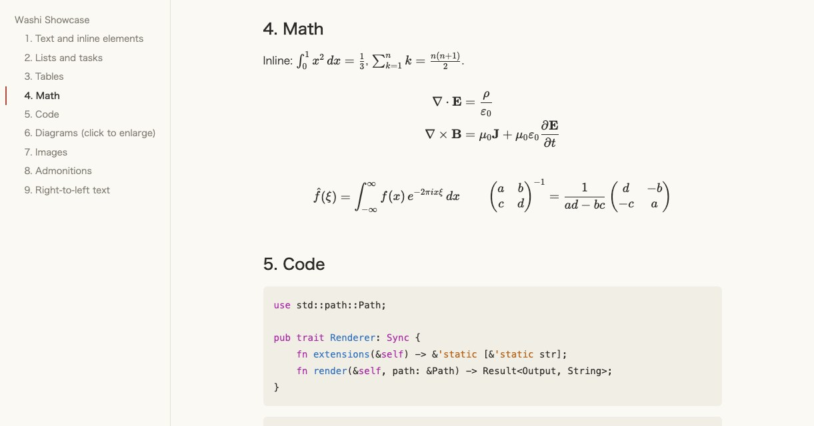
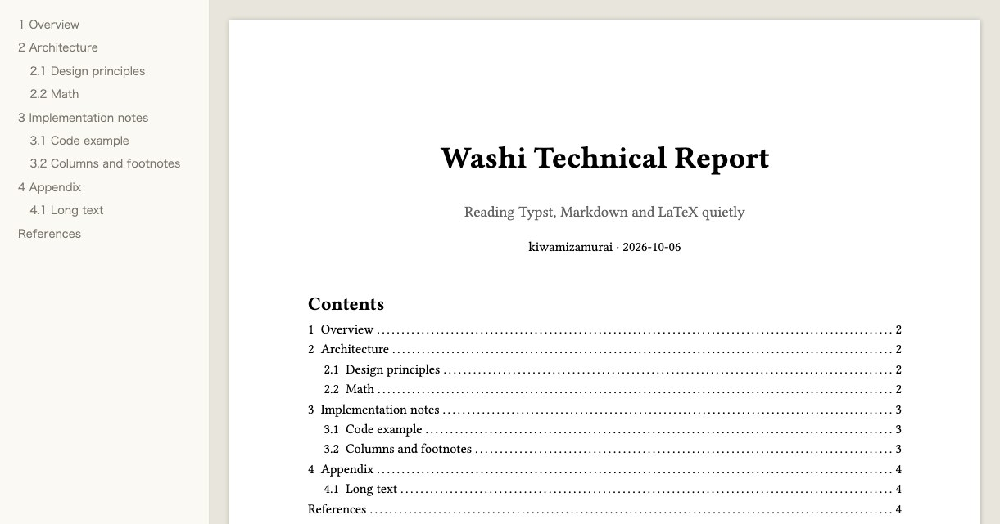
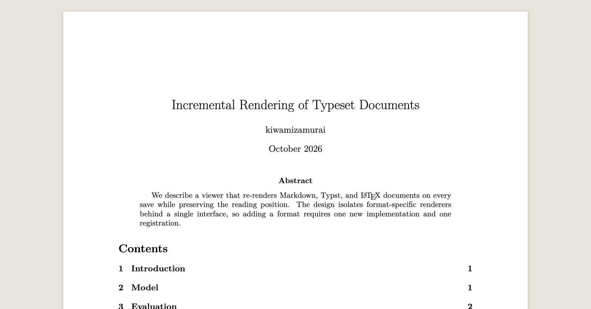
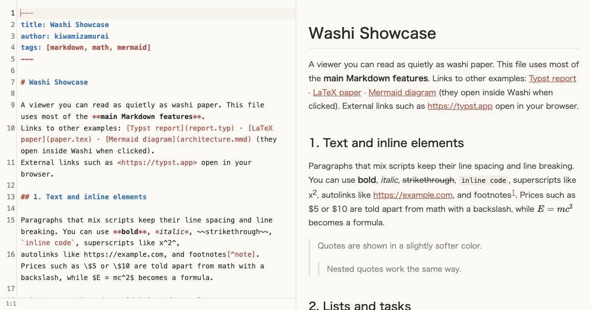
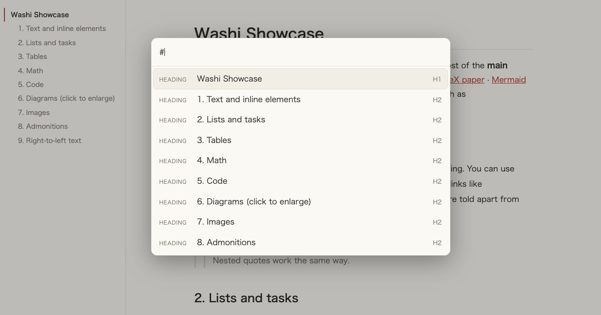

Washi
A small macOS app for reading Markdown, Typst, LaTeX, Mermaid and PDF. It redraws when the file changes. Press ⌘E to edit with a live preview.

What it does
- Opens Markdown, Typst, LaTeX, Mermaid and PDF.
- Redraws when the file is saved, and keeps your scroll position. Files it includes (
\input,#include, images) are watched too. - ⌘E opens an editor next to the preview, which updates as you type. Typst gets completion and error markers.
- ⌘-click the preview to jump to the source line, and the preview follows the cursor.
- Asks before overwriting a file that changed on disk, and marks unsaved changes.
- ⌘K opens a command palette for commands, recent files and headings. ⌘F shows how many matches there are.
- Typst compiles inside the app. LaTeX uses latexmk or tectonic.
washi file.mdopens a file from the terminal, and--jsonprints a stable result.- No telemetry. It uses the network only to fetch Typst
@previewpackages.
Screenshots




Compared with other apps
| Washi | Typeset Viewer | Texpile | Oleafly | hibi | Quire Writer | |
|---|---|---|---|---|---|---|
| Built-in editor | Yes, on demand | No | Yes | Yes | Yes | Yes |
| Live preview while typing | Yes | No | Yes | Yes | Yes | Yes |
| Redraws when saved elsewhere | Yes | Yes | – | – | – | – |
| PDF to source jump | Typst, LaTeX | – | – | Yes | – | Typst |
| Mermaid | Yes | – | – | – | Yes | – |
| License | MIT | Closed | AGPL‑3.0 | AGPL‑3.0 | GPL‑3.0 | GPL‑3.0 |
| macOS download | 26 MB | 28 MB | – | 191 MB | – | 56 MB |
More detail is in the README.
Install
Apple Silicon Macs only.
brew install --cask kiwamizamurai/tap/washi
washi notes.mdOr download the zip from Releases and move it to Applications. The app is not signed, so allow it once under System Settings → Privacy & Security.